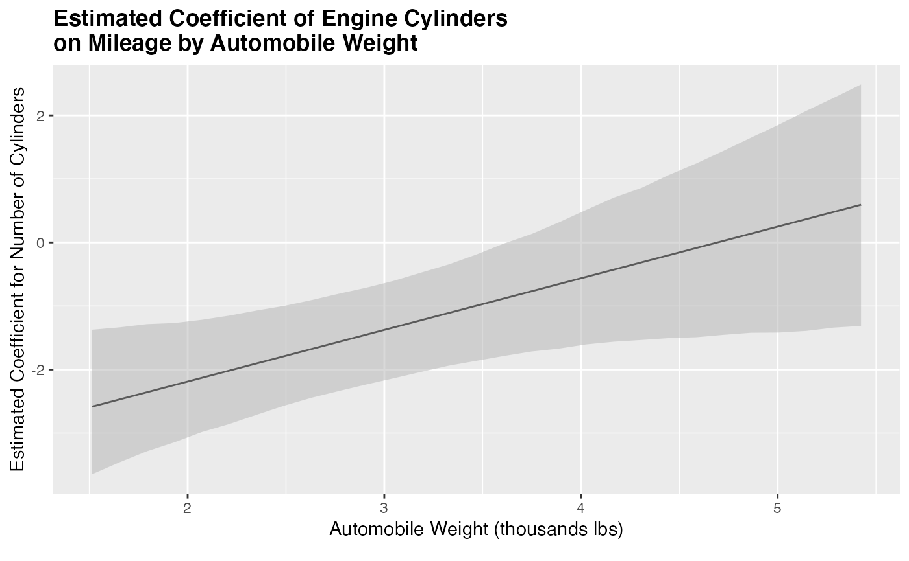
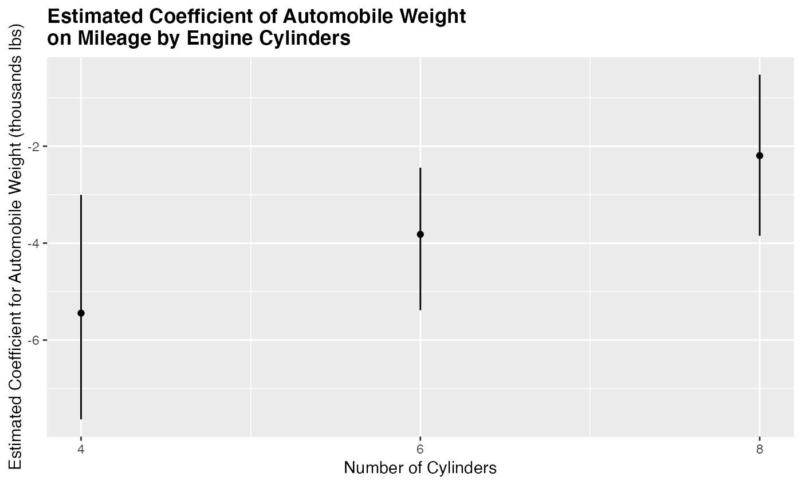

R/Interplot.R
interplot.Rdinterplot is a generic function to produce a plot of the coefficient estimates of one variable in a two-way interaction conditional on the values of the other variable in the interaction term. The function invokes particular methods which depend on the class of the first argument.
interplot(
m,
var1,
var2,
plot = TRUE,
steps = NULL,
ci = 0.95,
adjCI = FALSE,
hist = FALSE,
var2_dt = NA,
predPro = FALSE,
var2_vals = NULL,
point = FALSE,
sims = 1000,
xmin = NA,
xmax = NA,
ercolor = NA,
esize = 0.5,
ralpha = 0.5,
rfill = "grey70",
stats_cp = "none",
txt_caption = NULL,
...
)Benjamini, Yoav, and Yosef Hochberg. 1995. "Controlling the False Discovery Rate: A Practical and Powerful Approach to Multiple Testing". Journal of the Royal Statistical Society, Series B 57(1): 289--300.
Brambor, Thomas, William Roberts Clark, and Matt Golder. "Understanding interaction models: Improving empirical analyses". Political Analysis 14.1 (2006): 63-82.
Esarey, Justin, and Jane Lawrence Sumner. 2015. "Marginal Effects in Interaction Models: Determining and Controlling the False Positive Rate". URL: https://jee3.web.rice.edu/interaction-overconfidence.pdf.
A model object including an interaction term, or, alternately, a data frame generated by an earlier call to interplot using the argument plot = FALSE.
The name (as a string) of the variable of interest in the interaction term; its conditional coefficient estimates will be plotted.
The name (as a string) of the other variable in the interaction term
A logical value indicating whether the output is a plot or a dataframe including the conditional coefficient estimates of var1, their upper and lower bounds, and the corresponding values of var2.
Desired length of the sequence. A non-negative number, which for seq and seq.int will be rounded up if fractional. The default is 100 or the unique categories in the var2 (when it is less than 100. Also see unique).
A numeric value defining the confidence intervals. The default value is 95% (0.95).
A logical value indication if applying the adjustment of confidence intervals to control the false discovery rate following the Esarey and Sumner (2017) procedure. (See also Benjamini and Hochberg 1995.) The default is FALSE; the plot presents the confidence intervals suggested by Brambor, Clark, and Golder (2006). The functions dealing with multilevel model outputs in this package do not equip with this argument, because there is the controversy on the accurate degrees of freedom for multilevel models, esp. when random effect is engaged and the degrees of freedom is a necessary information to conduct the CI adjustment. See e.g., https://stat.ethz.ch/pipermail/r-help/2006-May/094765.html and https://stat.ethz.ch/pipermail/r-sig-mixed-models/2008q1/000517.html.
A logical value indicating if there is a histogram of `var2` added at the bottom of the conditional effect plot.
A numerical value indicating the frequency distribution of `var2`. It is only used when `hist == TRUE`. When the object is a model, the default is the distribution of `var2` of the model.
A logical value with default of `FALSE`. When the `m` is an object of class `glm` or `glmerMod` and the argument is set to `TRUE`, the function will plot predicted probabilities at the values given by `var2_vals`.
A numerical value indicating the values the predicted probabilities are estimated, when `predPro` is `TRUE`.
A logical value determining the format of plot. By default, the function produces a line plot when var2 takes on ten or more distinct values and a point (dot-and-whisker) plot otherwise; option TRUE forces a point plot.
Number of independent simulation draws used to calculate upper and lower bounds of coefficient estimates: lower values run faster; higher values produce smoother curves.
A numerical value indicating the minimum value shown of x shown in the graph. Rarely used.
A numerical value indicating the maximum value shown of x shown in the graph. Rarely used.
A character value indicating the outline color of the whisker or ribbon.
A numerical value indicating the size of the whisker or ribbon.
A numerical value indicating the transparency of the ribbon.
A character value indicating the filling color of the ribbon.
A character value indicating what statistics to present as the plot note. Three options are available: "none", "ci", and "ks". The default is "none". See the Details for more information.
A character string to add a note for the plot, a value will sending to ggplot2::labs(caption = txt_caption)).
Other ggplot aesthetics arguments for points in the dot-whisker plot or lines in the line-ribbon plots. Not currently used.
The function returns a ggplot object.
interplot visualizes the changes in the coefficient of one term in a two-way interaction conditioned by the other term. In the current version, the function works with interactions in the following classes of models:
Ordinary linear models (object class: lm);
Generalized linear models (object class: glm);
Linear mixed-effects models (object class: lmerMod);
Generalized linear mixed-effects models (object class: glmerMod);
Ordinary linear models with imputed data (object class: list);
Generalized linear models with imputed data (object class: list)
Linear mixed-effects models with imputed data (object class: list);
Generalized linear mixed-effects models with imputed data (object class: list).
The examples below illustrate how methods invoked by this generic deal with different type of objects.
Because the output function is based on ggplot, any additional arguments and layers supported by ggplot2 can be added with the +.
interplot visualizes the conditional effect based on simulated marginal effects. The simulation provides a probabilistic distribution of moderation effect of the conditioning variable (var2) at every preset values (including the minimum and maximum values) of the conditioned variable (var1), denoted as Emin and Emax. This output allows the function to further examine the conditional effect statistically in two ways. One is to examine if the distribution of \(Emax - Emin\) covers zero. The other is to directly compare Emin and Emax through statistical tools for distributional comparisons. Users can choose either method by setting the argument stats_cp to "ci" or "ks".
"ci" provides the confidence interval of the difference of \(Emax - Emin\). An interval including 0 suggests no statistical difference before and after the conditional effect is applied, and vise versa.
"ks" presents the result of a two-sample Kolmogorov-Smirnov test of the simulated distributions of Emin and Emax. The output includes a D statistics and a p-value of the null hypothesis that the two distributions come from the same distribution at the 0.05 level.
See an illustration in the package vignette.
data(mtcars)
m_cyl <- lm(mpg ~ wt * cyl, data = mtcars)
library(interplot)
# Plot interactions with a continous conditioning variable
interplot(m = m_cyl, var1 = 'cyl', var2 = 'wt') +
xlab('Automobile Weight (thousands lbs)') +
ylab('Estimated Coefficient for Number of Cylinders') +
ggtitle('Estimated Coefficient of Engine Cylinders\non Mileage by Automobile Weight') +
theme(plot.title = element_text(face='bold'))

# Plot interactions with a categorical conditioning variable
interplot(m = m_cyl, var1 = 'wt', var2 = 'cyl') +
xlab('Number of Cylinders') +
ylab('Estimated Coefficient for Automobile Weight (thousands lbs)') +
ggtitle('Estimated Coefficient of Automobile Weight \non Mileage by Engine Cylinders') +
theme(plot.title = element_text(face='bold'))
